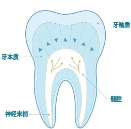

牙本质敏感的主流解释是流体动力学理论：外界温度或渗透压变化驱动牙本质小管内的液体流动，牵拉小管深处的神经末梢，触发疼痛信号。
现有脱敏方案存在明确缺陷——商用格鲁玛（Gluma）脱敏剂含有 HEMA 和戊二醛，具有显著细胞毒性，仅建议严重疼痛时使用；氟化物与树脂类产品多为表面覆盖，耐久性差，易磨损脱落。
需要一种能深入小管、原位矿化、安全持久的新路径。
Mg-ACCP 生物矿化凝胶 · 牙本质脱敏修护
牙本质敏感的主流解释是流体动力学理论：外界温度或渗透压变化驱动牙本质小管内的液体流动，牵拉小管深处的神经末梢，触发疼痛信号。
现有脱敏方案存在明确缺陷——商用格鲁玛（Gluma）脱敏剂含有 HEMA 和戊二醛，具有显著细胞毒性，仅建议严重疼痛时使用；氟化物与树脂类产品多为表面覆盖，耐久性差，易磨损脱落。
需要一种能深入小管、原位矿化、安全持久的新路径。

多离子无定形凝胶前驱体
盐环境决定终点矿物
除盐种类与浓度外，时间、pH、添加剂（胶原/酪蛋白/Sr2+ 等）均可进一步调控产物相与结晶度。同一凝胶前驱体，通过环境参数组合，实现"相图式"的矿物选择。
脱敏材料的完整验收路径
CCK-8 · 活死染
EDTA · H₃PO₄
液体流动测量
150–250 μm
SEM 矩阵
纳米压痕
H&E · 21 天
大鼠 · 体内
VAS · Schiff · Yeaple
安全 → 模型 → 封闭 → 耐受 → 力学 → 长期 → 临床
矿化脱敏修护牙膏
日常刷牙即脱敏，同时支持再矿化修护
